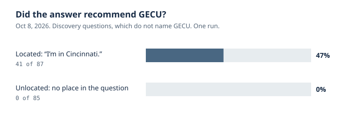
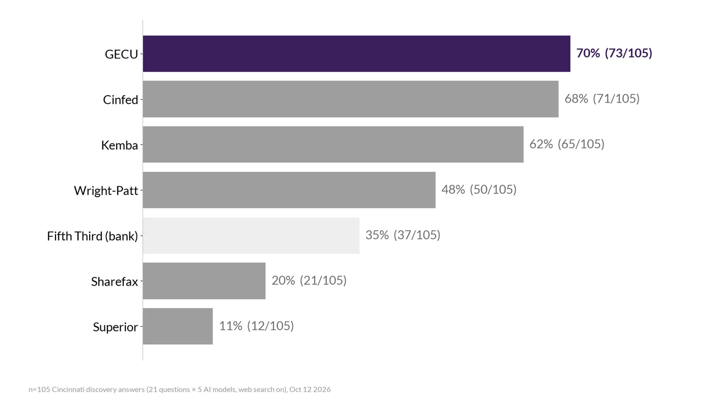
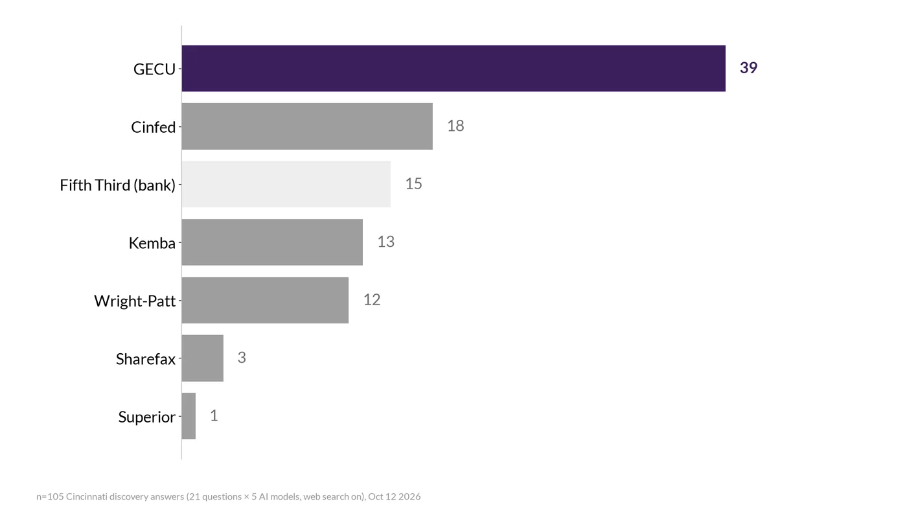
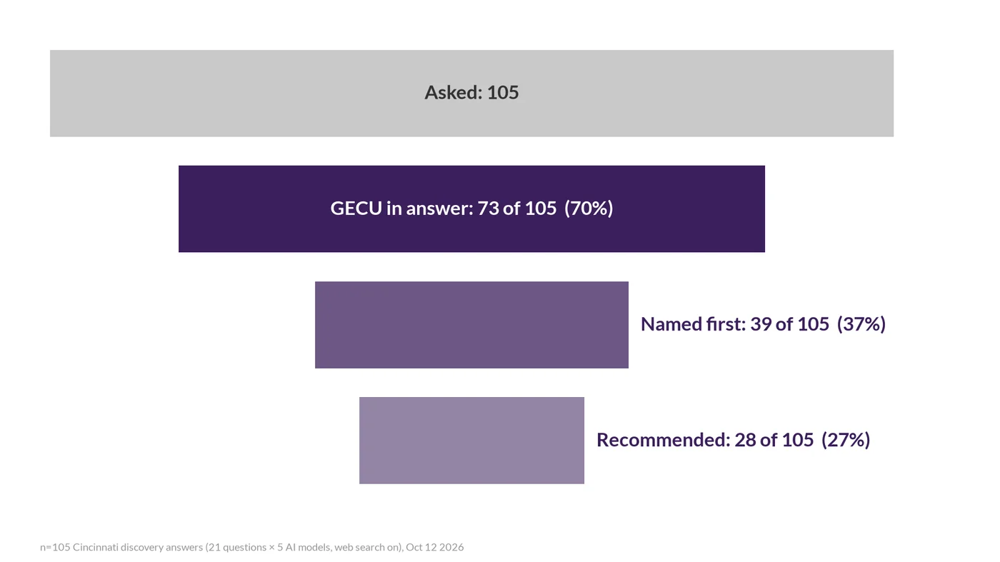

Key finding. Location decided the answer. When the question said "I'm in Cincinnati," the credit union was recommended in 41 of 87 answers (47%). With no location, it was recommended in 0 of 85.
The problem
Search results are no longer the only front door. People ask an assistant "where should I bank?" and get a short list. I had no cheap, repeatable way to see whether a local institution was on that list, or whether the list depended on the asker saying where they were.
GECU is my employer. The questions, the answers, and the scores in this study are from public model calls I ran on my own. A separate page covers the same market with public rates, branches, and reviews.
How it works
I sent fixed questions to models through OpenRouter with web search on, and no system prompt. Each answer is scored on a four-step ladder. The strongest rung is the one that counts.
- RecommendedOn the answer's own shortlist
- CitedIts site is a source, and it is not recommended
- MentionedNamed only
- AbsentNot named
GECU was hand-scored on every answer. Rivals were scored with rules and spot checks. A rung above "absent" has to include an exact quote that appears in the answer. A look-alike with the same acronym, including the GECU in El Paso, is logged as a mix-up and never counted as the Cincinnati credit union.
There were two scored runs, plus a smaller first check. They are separate baselines, not a trend.
| Run | Design | Answers |
|---|---|---|
| Oct 7, 2026 | First check. One search path, not part of the 383. | 12 prompts on 4 search paths, plus 11 model calls |
| Oct 8, 2026 | 8 models × 15 questions × 2 versions (located and unlocated). 240 calls. | 233 (7 calls failed, all one model) |
| Oct 12, 2026 | 5 models × 30 questions. Every prompt began "I'm in Cincinnati." | 150 of 150 |
The 383 is 233 + 150. All answers came from AI models through OpenRouter's API with web search on — not from the consumer ChatGPT, Gemini, Copilot, or Google apps. The Oct 8 models were GPT, a Copilot-class stand-in, Gemini, Claude, Grok, Perplexity, Perplexity Pro, and a Meta-class stand-in. The Oct 12 models were GPT, the Copilot-class stand-in, Gemini, Claude, and Grok. Where a name matches a consumer product, it is the nearest OpenRouter model, not the signed-in app.
Located means the question started with "I'm in Cincinnati," plus a location parameter where the model supports one. Unlocated means the same words with no place anywhere. On Oct 8, 11 of the 15 questions did not name GECU (discovery) and 4 did (brand). On Oct 12, 21 were discovery and 9 were brand.
Results
Asking from a place changed the outcome. On the Oct 8 discovery questions, GECU was recommended in 41 of 87 located answers (47%) and in 0 of 85 unlocated answers.

The same acronym caused a different error when no city was given. On Oct 8 brand questions with no location, 21 of 32 answers described the El Paso GECU, 9 of 32 named both or asked which one, and 2 were unclear. With "I'm in Cincinnati," 29 of 29 located brand answers described the Cincinnati credit union.
Models did not agree with each other. On located Oct 8 discovery questions, recommendations ran from 0 of 10 (the Meta-class stand-in) to 10 of 11 (GPT and the Copilot-class stand-in). Gemini recommended GECU in 8 of 11, Grok in 6, Perplexity in 3, Claude in 2, and Perplexity Pro in 2.
The Oct 12 run kept the city in every prompt. Of 105 discovery answers, GECU was in the answer 73 times (70%) and named first 39 times. The two closest local credit unions were close behind on mentions and well behind on being first.


| Institution | In the answer | Named first |
|---|---|---|
| GECU | 73 of 105 (70%) | 39 |
| Cinfed | 71 of 105 (68%) | 18 |
| Kemba | 65 of 105 (62%) | 13 |
| Wright-Patt | 50 of 105 (48%) | 12 |
| Fifth Third | 37 of 105 (35%) | 15 |
| Sharefax | 21 of 105 (20%) | 3 |
| Superior | 12 of 105 (11%) | 1 |
A stricter hand score, where the model tells the reader to use or start with GECU, was 28 of 105. The credit union's own site was a source on 60 of 105 discovery answers. One "Kemba" hit was the Columbus credit union, not the West Chester one. I took it out, which moved Kemba from 66 to 65 in the answer and from 14 to 13 named first.

On the 45 Oct 12 brand answers, 45 of 45 identified General Electric Credit Union in Cincinnati. None said a job at GE was required to join. Nine of the 45 still had a fact that did not match the credit union's site or the NCUA call report, including a high-yield savings product the site does not list, a youth account I could not find there, and one $10 membership-deposit line taken from the El Paso site. Seven of the 45 cited a look-alike site. The call report lists 324,004 members as of June 30, 2026. Located answers that stated a member count did not agree with each other: 160,000, 200,000, 260,000, 280,000, 320,000, and 324,000.
A decision I changed
The Oct 7 check used one search path. That would have been the wrong measurement. On the next run the recommendation rate ran from 0 of 10 answers to 10 of 11, depending on the model. I threw out the single-model read and scored eight models on the same questions, in two versions, so a location effect was not mixed up with a wording change.
A second change was narrower. One model returned blank answers at a 600-token cap, so I raised only that model's cap to 1,500. On Oct 12, with the 600-token cap still in place for the others and 1,500 for Claude, 48 of 150 answers hit the cap. The brand lists usually appeared before the cut.
Status
The study is complete. The scored runs were Oct 8 and Oct 12, 2026, after the Oct 7 check. Nothing in it is scheduled to repeat.
Open questions
- Each question was asked once per model. This does not measure how much an answer moves from day to day. A weekly repeat was sketched and not approved.
- OpenRouter API calls with a search tool are not the consumer ChatGPT, Gemini, Copilot, or Google apps, and two model slots are stand-ins for product families.
- Rival counts are rules plus spot checks. GECU's own rungs were read by hand. Differences of one or two answers are noise.
- Location reached the models that accept a location parameter. It is not a GPS reading of a person.